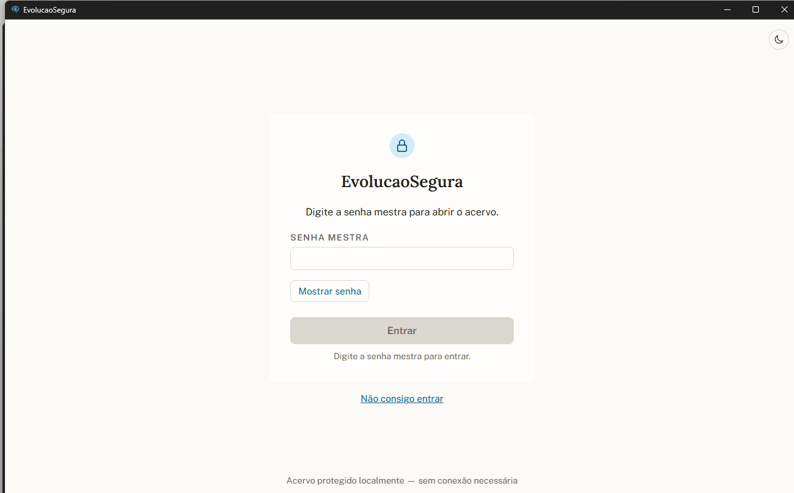
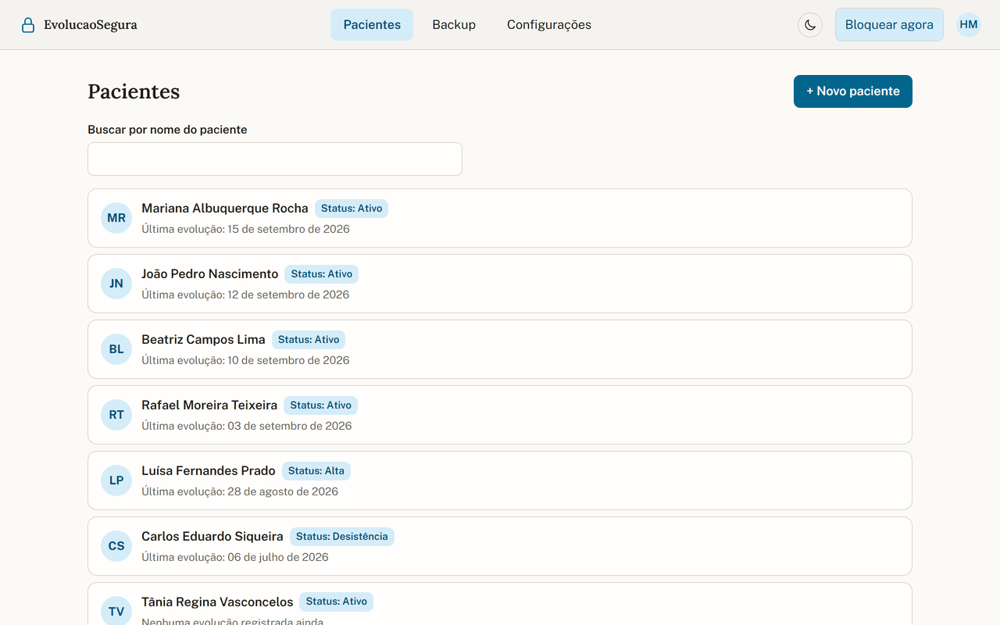
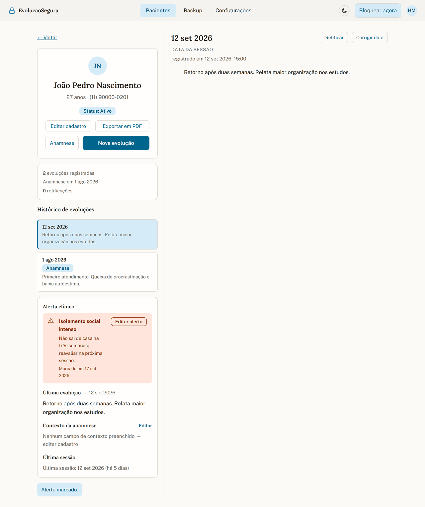
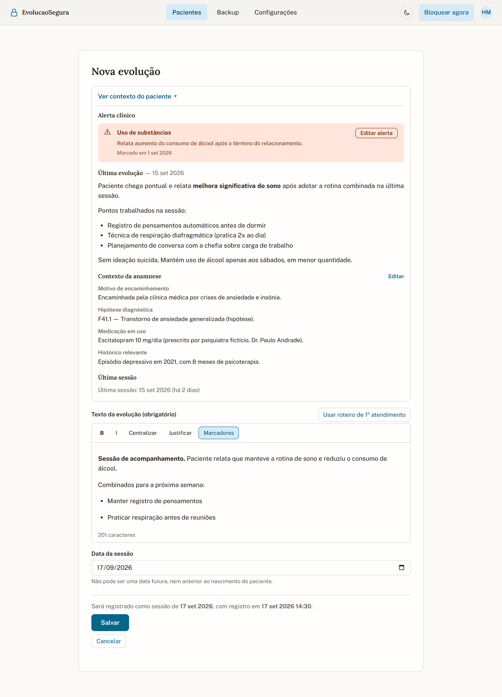
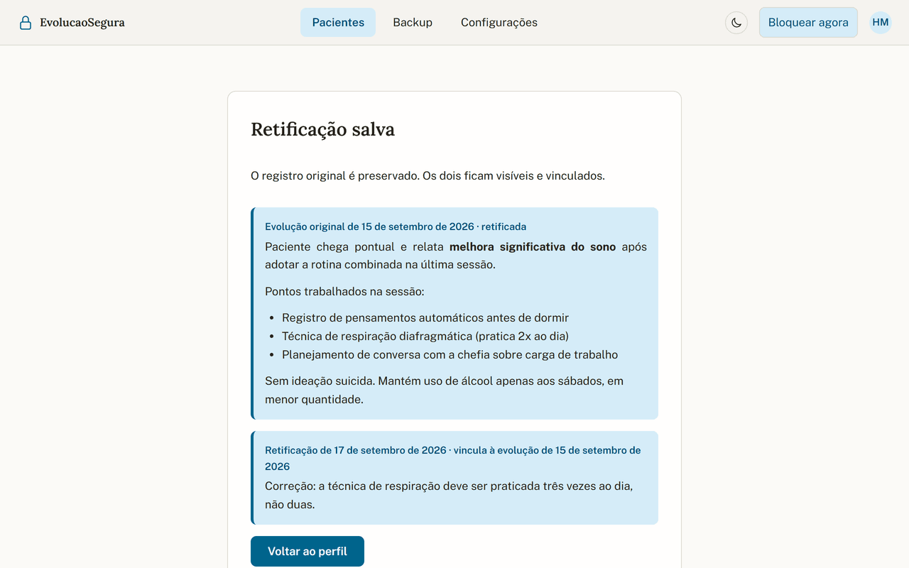
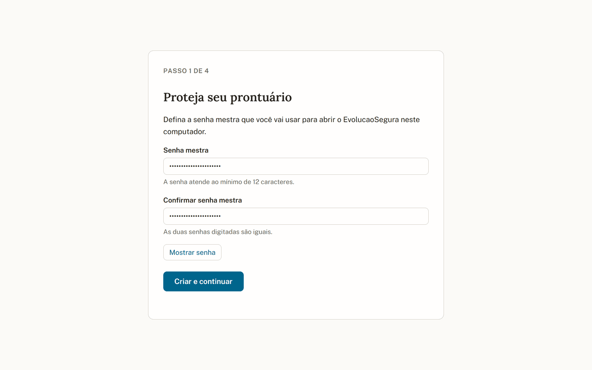
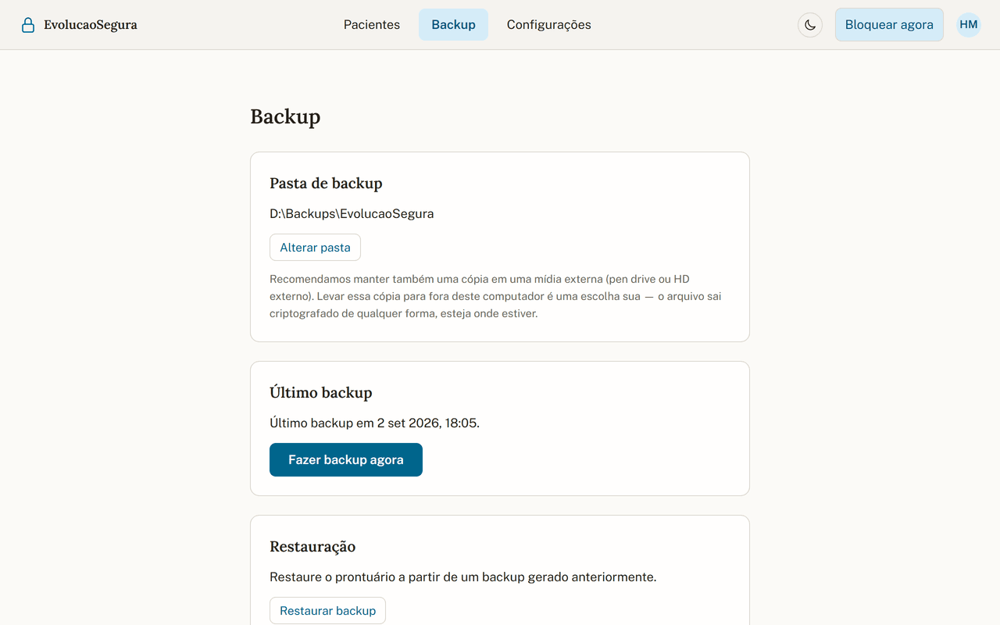

Abre com dois cliques
Qualquer pessoa que sentar naquele computador — em casa, no consultório compartilhado, ou quem ficar com o notebook depois de um furto — abre o arquivo e lê tudo. Não há senha entre o visitante e o prontuário.
Evolução Segura · Prontuário eletrônico
Feito para o psicólogo clínico autônomo. O acervo fica na sua máquina, protegido por uma chave que só abre com a sua senha mestra — e cada evolução, depois de salva, não muda mais: correção é retificação registrada, não rasura.
Download ainda não disponível nesta fase.

O ponto de partida
A maior parte do registro clínico autônomo vive num editor de texto ou num caderno. Funciona — até o dia em que não funciona. Três coisas costumam passar despercebidas:
Qualquer pessoa que sentar naquele computador — em casa, no consultório compartilhado, ou quem ficar com o notebook depois de um furto — abre o arquivo e lê tudo. Não há senha entre o visitante e o prontuário.
No Windows, a pasta Documentos é sincronizada com o OneDrive por padrão. Na prática, é altíssima a chance de o prontuário já estar numa nuvem que o profissional nunca escolheu, sob termos que ele nunca leu.
Um registro de meses atrás pode ser editado hoje, e o arquivo não guarda nenhuma marca disso. Num eventual questionamento ético ou judicial, um registro sem rastro de alteração é um registro difícil de sustentar.
O que o Evolução Segura faz
Não é um sistema de clínica. Não tem recepção, agenda de várias salas, convênio nem faturamento. É um profissional, um computador, um acervo.
O acervo inteiro é criptografado. A chave só se abre com a sua senha mestra ou com o código de recuperação que você guarda fisicamente.
Evolução salva é evolução imutável. Errou? A correção entra como retificação vinculada — original e correção ficam visíveis e datados.
Lista de pacientes, busca por nome e o histórico completo de cada um em ordem — sem caçar arquivo em pasta.
Por dentro
Todas as capturas abaixo vêm de um acervo de demonstração, com pacientes e evoluções fictícios. Nenhum dado real de paciente é exibido neste site.
A tela inicial depois de entrar: todos os pacientes em uma lista, com busca por nome. Um clique abre o histórico completo daquela pessoa.

O perfil reúne as evoluções em ordem cronológica e o painel de contexto clínico. É a tela onde você passa a maior parte do tempo — e é por isso que ela precisa aparecer inteira aqui.

Ao lançar uma evolução, o app guarda os dois momentos separadamente. Registrar no dia seguinte deixa de ser um problema de fidedignidade: fica documentado exatamente como foi.

Uma evolução salva não é editada. A correção entra como retificação vinculada, e o prontuário passa a mostrar as duas versões, datadas. É o oposto da rasura no papel e da edição invisível no editor de texto.



Resolução CFP nº 001/2022
A resolução do Conselho Federal de Psicologia exige a guarda do prontuário por no mínimo cinco anos e o registro fidedigno do atendimento. O Evolução Segura foi desenhado em cima dessas duas exigências: o acervo é seu e fica com você pelo tempo que precisar, e o registro é imutável com retificação rastreável, em vez de um arquivo que qualquer um reescreve.
O app é uma ferramenta de apoio ao cumprimento dessas obrigações — a responsabilidade profissional pelo prontuário permanece integralmente do psicólogo.
Instalação
Prefiro te contar antes: a instalação exibe um aviso de segurança do Windows. Explico exatamente por quê — e o que você pode conferir antes de decidir.
O instalador do Evolução Segura ainda não é assinado com certificado digital. Certificado de assinatura é um item pago e renovável — e, nesta fase, o produto optou por não repassar esse custo. A consequência é que o SmartScreen do Windows mostra a tela "O Windows protegeu o seu computador", e antivírus podem marcar o arquivo como suspeito (falso positivo).
Não vou te pedir para ignorar um alerta de segurança sem explicar. O aviso não significa que o arquivo é malicioso — significa que o Windows ainda não reconhece quem o assinou. É a mesma tela que aparece para qualquer software novo de desenvolvedor independente.
O caminho, se você decidir instalar:
Mais informações › Executar assim mesmo
O que você pode conferir antes:
Se mesmo assim você não se sentir confortável, não instale. Fale comigo — prefiro responder sua dúvida a ter você clicando em algo que não entendeu.
Licença de uso
Passados os 7 dias, o app bloqueia apenas a escrita: não dá para registrar evolução nova. A leitura de tudo o que você já gravou continua disponível — e a exportação em PDF também.
O passo a passo para continuar usando depois do teste ainda está sendo definido — quando estiver pronto, esta seção é atualizada com os detalhes.
Antes de baixar
| Sistema operacional | Windows 10 ou Windows 11 (64 bits) |
|---|---|
| macOS / Linux | Não suportados nesta versão |
| Conexão com a internet | Não é necessária para usar o app. Só para baixar e instalar o programa. |
| Onde ficam os dados | No seu computador, em acervo criptografado. Não há servidor nosso guardando prontuário. |
| Perfil de uso | Um profissional, um computador, um acervo. Não é multiusuário. |
| Espaço em disco | A confirmar |
Dúvidas
Você usa o código de recuperação gerado na configuração inicial — aquele que o app pede para você imprimir e guardar fisicamente. Sem a senha e sem o código, o acervo não abre, por ninguém. Isso é consequência direta da criptografia ser real: não existe porta dos fundos.
Não. O acervo fica no seu computador e o app funciona sem conexão. Não há telemetria contínua nem envio silencioso de nada. A única comunicação com a internet é o licenciamento, e nela trafega só a chave da instalação.
Não nesta versão. O Evolução Segura foi feito para o psicólogo clínico autônomo: um profissional, um computador, um acervo. Não tem recepção, múltiplos usuários, convênio nem faturamento.
Hoje não. A versão atual é só para Windows 10 e 11. macOS está no horizonte, mas não tem data — e prefiro não prometer.
O app tem backup e restauração do acervo. O backup também é criptografado — guardá-lo num HD externo ou pendrive não desfaz a proteção.
Instale, crie sua senha mestra e use por 7 dias. Se não for para você, o que já foi escrito continua legível e exportável.